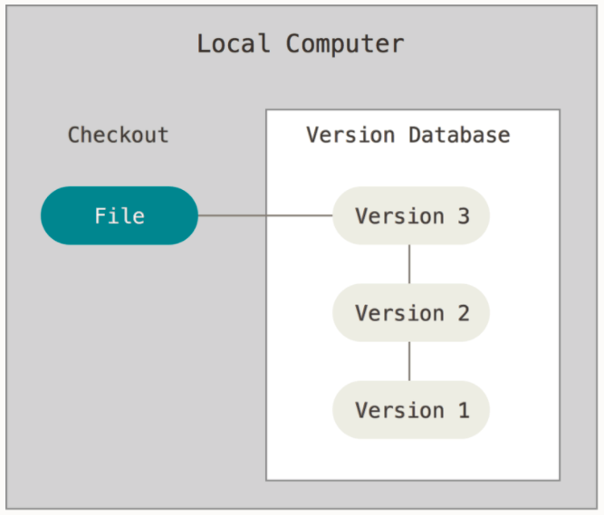
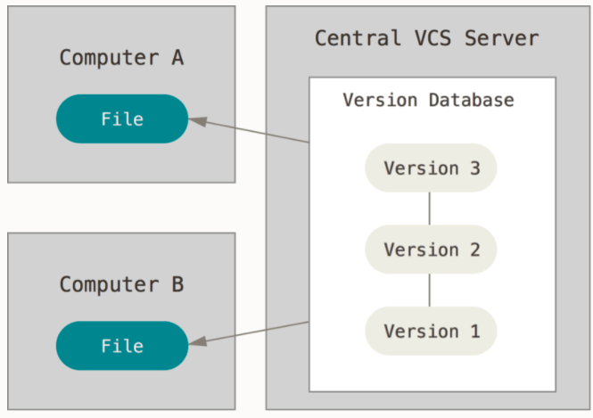
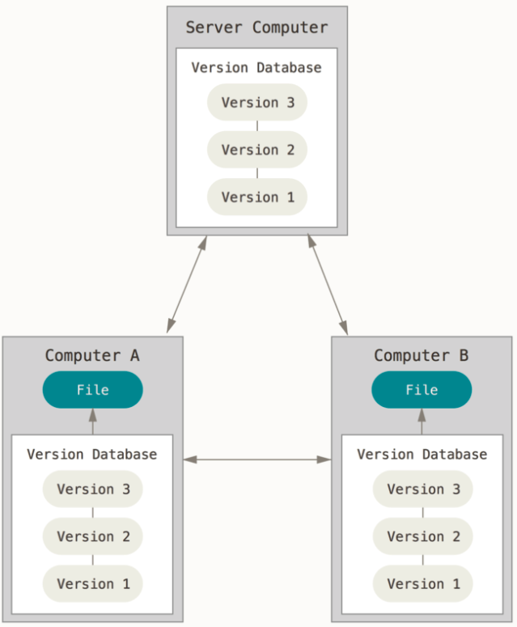

Sistemi di controllo versione
Progettazione e Sviluppo del Software
C.D.L. Tecnologie dei Sistemi Informatici
Gianluca Aguzzi — gianluca.aguzzi@unibo.it
Angelo Filaseta — angelo.filaseta@unibo.it
Riconoscimenti
-
Questo materiale è ampiamente basato su quello realizzato dal Prof. Danilo Pianini, che ringrazio.
-
Ogni errore riscontratovi è esclusiva responsabilità degli autori di questo documento.
Outline
Goal della lezione
- Apprendere motivazioni, obiettivi, e tipologie degli strumenti di controllo di versione
- Apprendere l’utilizzo pratico del DVCS
git
Argomenti
- Concetto di Version Control System (VCS)
- Tipologie di VCS: centralizzati vs. decentralizzati
- Concetti dei DVCS: repository, working tree, commit, branch, commit reference, checkout
git:- operatività di base: comandi
config,init,add,reset,commit,status,checkout,log,diff - elementi peculiari: concetto di stage (index), configurazione,
.gitignore, gestione dei caratteri di “fine linea” - ulteriore operatività di base: comandi
branch,merge - lavorare con i remote: comandi
clone,push,fetch,pull
- operatività di base: comandi
- GitHub: hosting per repository git + servizi per sviluppo collaborativo
Introduzione ai Sistemi di Controllo di Versione (VCS)
Motivazioni
Due motivazioni principali:
- tenere traccia delle modifiche durante lo sviluppo del software
- evitare la perdita di progressi
- osservare / tornare avanti e indietro nella cronologia delle modifiche
- documentare il processo di sviluppo
- supportare la collaborazione tra più sviluppatori di software
- lavorare concorrentemente
- integrazione delle modifiche e risoluzione dei conflitti
Tracciare le modifiche
Hai mai avuto bisogno di ripristinare un progetto o un compito a una versione precedente?
Come hai tracciato la storia del progetto?
Metodo classico
- trovare una convenzione di denominazione per file/cartelle
- creare una copia ogni volta che si registra un progresso rilevante
- creare una copia ogni volta che inizia uno sviluppo ambizioso ma rischioso
Inefficace!
- Inefficiente: consuma molte risorse (spazio)
- Richiede tempo e operazioni manuali proclivi all’errore
- Diversi compiti sono difficili: Come capire cosa c’era nelle versioni precedenti? Come selezionare solo alcune modifiche?
Promuovere flussi di lavoro collaborativi
Hai mai avuto bisogno di sviluppare un progetto o un compito in team?
Come hai organizzato il lavoro per massimizzare la produttività?
Metodi classici
- Uno schermo, molte teste
- a.k.a. uno lavora, gli altri dormono
- Blocchi: “per favore non toccare la sezione 2, ci sto lavorando”
- probabilità di conflitti prossima al 100%
- Condivisione in tempo reale (come Google Docs o Overleaf)
- accettabile in molti casi per documenti di testo (ma con il rischio di “frankenstenizzazione”)
- dirompente con il codice (le incoerenze sono molto meno tollerabili nei linguaggi formali)
Sistemi di Controllo di Versione (VCS)
- Anche chiamati Sistemi di Gestione del Contenuto Sorgente (SGCS)
Sistemi di Controllo di Versione (VCS): strumenti pensati per supportare lo sviluppo di progetti tramite
- Il tracciamento della storia del progetto
- Il permesso di effettuare dei rollback
- La raccolta di meta-informazioni sulle modifiche
- Autori, date, note…
- Il merge delle informazioni prodotte in diverse fasi
- La facilitazione di flussi di lavoro paralleli (in alcuni casi)
Due tipi principali:
- Centralizzati: Una copia di riferimento del repository contiene tutta la storia; gli sviluppatori lavorano su un sottoinsieme di tale storia
- Distribuiti: Ogni copia del repository contiene tutta la storia (cioè, ogni sviluppatore ne ha una localmente)
VCS Locale vs. Centralizzato vs. Distribuito
Locale

Centralizzato

Distribuito

Breve storia
- Concurrent Versioning System (CVS) (1986): sistema client-server (modello centralizzato, la verità risiede sul server), opera su singoli file o a livello di repository, la cronologia è memorizzata in una directory nascosta, utilizza la compressione delta per risparmiare spazio.
- Apache Subversion (SVN) (2000): successore di CVS, ancora ampiamente utilizzato (soprattutto nelle aziende che faticano a rinnovare i propri processi). Modello centralizzato (simile a CVS). Migliorata la gestione dei file binari. Migliorata la concorrenza per le operazioni, ma ancora macchinoso per i flussi di lavoro paralleli.
- Mercurial e Git (entrambi aprile 2005): sistemi di controllo versione decentralizzati (DVCS), nessuna copia “speciale” del repository, ogni client memorizza l’intera cronologia. Altamente scalabili. Favoriscono il lavoro parallelo permettendo un’agevole creazione e fusione di rami. Concettualmente molto simili (quando due strumenti di successo emergono contemporaneamente con un modello simile in modo indipendente, è un’indicazione che il modello sottostante è “quello giusto” per il contesto).
Git è ora il DVCS dominante (sebbene Mercurial sia ancora in uso, ad esempio, per Python, Java, Facebook).
Tendenze Google ad oggi
Intuizione: la cronologia di un progetto
- Crea un nuovo progetto
- Apportare alcune modifiche
- Poi sempre di più, fino a quando il progetto è pronto
A prima vista, la cronologia di un progetto sembra una linea.
Tranne che, nel mondo reale…
Anything that can go wrong will go wrong
$1^{st}$ Murphy’s law
If anything simply cannot go wrong, it will anyway $5^{th}$Murphy’s law
…le cose vanno storte
Ripristinare le modifiche
Tornare indietro nel tempo a uno stato precedente in cui le cose funzionavano
Ottenere la versione precedente e correggere
Quindi correggere l’errore
Se si considerano i rollback, la cronologia è un albero!
Collaborazione: divergenza
Alice e Bob lavorano insieme per un po’ di tempo, poi tornano a casa e lavorano separatamente, in parallelo
Hanno una cronologia divergente!
Collaborazione: riconciliazione
Se si ha la possibilità di riconciliare gli sviluppi divergenti, la cronologia diventa un grafo!
Riconciliare gli sviluppi divergenti è solitamente chiamato merge (unione)
Concetti e terminologia DVCS: Repository
Repository: include l’intero contenuto/cronologia del progetto (e i metadati)
- tutte le modifiche, insieme ai loro autori, date e descrizioni
- informazioni su come ripristinare le modifiche
- differenze tra diversi punti nel tempo
- e così via
Di solito, memorizzato in una cartella nascosta nella cartella principale del progetto
Concetti e terminologia DVCS: Working Tree
(o worktree, o working directory)
l’insieme di file (solitamente, all’interno di una cartella radice) che costituiscono il progetto, escludendo i metadati.
Concetti e terminologia DVCS: Commit
Uno stato salvato del progetto.
- Raccoglie le modifiche necessarie per trasformare il commit precedente (genitore) nel commit corrente (tracciamento differenziale)
- Crea uno snapshot dello stato del worktree (snapshotting).
- Registra i metadati: commit genitore, autore, data, un messaggio che riassume le modifiche e un identificatore univoco (UID).
- Un commit senza genitori è un commit iniziale.
- Un commit con più genitori è un commit di merge.
Concetti e terminologia DVCS: Branch
Una sequenza nominata di commit
Se nessun branch è stato creato al primo commit, viene utilizzato un nome predefinito.
Concetti e terminologia DVCS: Riferimenti ai commit
Per poter tornare indietro nel tempo o cambiare branch, è necessario fare riferimento ai commit
- I riferimenti ai commit sono anche chiamati
tree-ish - Ogni commit ha un identificatore univoco, che è un riferimento valido
- Un nome di branch è un riferimento di commit valido (punta all’ultimo commit di quel branch)
Un nome di commit speciale è HEAD, che si riferisce al commit corrente
- Quando si esegue un commit, HEAD si sposta in avanti verso il nuovo commit
Riferimenti assoluti e relativi
Aggiungere ~ e un numero i a un tree-ish valido significa “i-esimo genitore di questo tree-ish”
Concetti e terminologia DVCS: Checkout
L’operazione di spostamento verso un altro commit (cioè a uno snapshot o versione del progetto)
- Spostamento verso un altro branch
- Spostamento indietro nel tempo
Sposta HEAD verso il tree-ish di destinazione specificato
Esempio di evoluzione del progetto
Proviamo a vedere cosa succede quando sviluppiamo un progetto, passo dopo passo.
- primo commit
- secondo commit

Oh, no, c’è stato un errore! Dobbiamo effettuare un rollback!
checkout di C4
- Nessuna informazione va persa, possiamo tornare allo stato
6ogni volta che vogliamo. - Cosa succede se facciamo un commit ora?
Branching!
*Ok, ma c’erano elementi utili in 5, vorrei averli in new-branch
Merging!
Nota che:
- abbiamo due branch
8è un commit di merge, in quanto ha due genitori:7e5- la situazione è la stessa indipendentemente dal fatto che si tratti di un singolo sviluppatore che torna indietro nello sviluppo o di sviluppatori multipli che lavorano in parallelo!
- questo è possibile perché ogni copia del repository contiene l’intera history!
Sistema di controllo delle versioni distribuito di riferimento: Git
Sistema di controllo delle versioni distribuito di fatto
- Distribuito
- Creato nel 2005 per sostituire BitKeeper come SCM per il kernel Linux
- Le prestazioni erano una preoccupazione principale
- Scritto in C
- Sviluppato da Linus Torvalds
- Ora mantenuto da altri
- Orientato a Unix
- Tiene traccia dei permessi dei file Unix
- Molto veloce
- Alla sua creazione, 10 volte più veloce di Mercurial¹, 100 volte più veloce di Bazaar
¹ Meno differenza ora, Facebook ha migliorato notevolmente Mercurial
Divertente introduzione storica
Approccio: prima la riga di comando
(in realtà: solo riga di comando)
Git è uno strumento a interfaccia a riga di comando (CLI)
Sebbene esistano interfacce grafiche, non ha senso imparare una GUI:
- sono più soggette a modifiche future rispetto alla CLI
- aggiungono un livello di interposizione tra te e lo strumento
- a meno che non siano incomplete, espongono più complessità di quella che possiamo gestire in questo corso
- cosa fai con una casella di controllo etichettata “squash when merging”?
- e che dire del checkout ricorsivo dei sottomoduli?
- non appena impari la CLI, diventi così proficuo che diventi più lento quando c’è un’interfaccia grafica di mezzo
Do per scontato una conoscenza minima dello shell, per favore fammelo sapere ORA se non l’hai mai visto
Operazioni di base con Git
Configurazione
La configurazione in Git avviene a due livelli:
- globale: le opzioni predefinite, valide a livello di sistema
- repository: le opzioni specifiche di un repository. Hanno precedenza sulle impostazioni globali
Strategia
Imposta le opzioni globali in modo ragionevole, poi sovrascrivile a livello di repository, se necessario.
git config
Il sottocomando config imposta le opzioni di configurazione
- quando viene utilizzato con l’opzione
--global, configura lo strumento globalmente - altrimenti, imposta l’opzione per il repository corrente
- (deve esserci un repository valido)
- Utilizzo:
git config [--global] category.option value- imposta
optiondicategoryavalue
- imposta
Configurazione: opzioni principali
Come detto, --global può essere omesso per sovrascrivere le impostazioni globali localmente
Nome utente ed email: user.name e user.email
Un nome e un contatto vengono sempre salvati come metadati, quindi devono essere configurati
git config --global user.name "Il tuo vero nome"git config --global user.email "il.tuo.indirizzo.email@il.tuo.provider"
Editor predefinito
Alcune operazioni aprono un editor di testo.
È conveniente impostarlo su uno strumento che sai usare
(per evitare, ad esempio, di essere “bloccato” all’interno di vi o vim).
Funziona qualsiasi editor che puoi invocare dal terminale.
git config --global core.editor nano
Nome del ramo predefinito
Come denominare il ramo predefinito.
Due scelte ragionevoli sono main e master
git config --global init.defaultbranch master
Inizializzazione di un repository
git init
- Inizializza un nuovo repository all’interno della directory corrente
- Materializzato nella cartella
.git - La posizione della cartella
.gitsegna la radice del repository- Non annidare i repository all’interno dei repository: è fragile
- I progetti annidati sono realizzati tramite sottomoduli (non discussi in questo corso)
- Attenzione al luogo in cui si esegue il comando!
- Prima usa
cdper posizionarti all’interno della cartella che contiene (o conterrà) il progetto- (eventualmente, crea prima la cartella con
mkdir)
- (eventualmente, crea prima la cartella con
- Quindi esegui
git init - se qualcosa va storto, puoi eliminare il repository eliminando la cartella
.git.
- Prima usa
Staging
Git ha il concetto di stage (o index).
- Le modifiche devono essere aggiunte allo stage per essere committate.
- I commit salvano le modifiche incluse nello stage
- I file modificati dopo essere stati aggiunti allo stage devono essere nuovamente aggiunti allo stage
git add <files>sposta lo stato corrente dei file nello stage come modifichegit reset <files>rimuove le modifiche attualmente in stage dei file dallo stagegit commitcrea un nuovo changeset con il contenuto dello stage
Osservazione dello stato del repository
È estremamente importante capire chiaramente qual è lo stato attuale delle cose
- Su quale ramo stiamo lavorando?
- Quali file sono stati modificati?
- Quali modifiche sono già in stage?
git status stampa lo stato corrente del repository, esempio di output:
❯ git status
Sul ramo master
Il tuo ramo è aggiornato con 'origin/master'.
Modifiche da impegnare:
(usa "git restore --staged <file>..." per rimuovere dallo stage)
modificato: content/_index.md
nuovo file: content/dvcs-basics/_index.md
nuovo file: content/dvcs-basics/staging.png
Modifiche non in stage per l'impegno:
(usa "git add <file>..." per aggiornare ciò che verrà impegnato)
(usa "git restore <file>..." per scartare le modifiche nella working directory)
modificato: layouts/shortcodes/gravizo.html
modificato: layouts/shortcodes/today.html
Commit
- Richiede un autore e un’email
- Possono essere configurati globalmente (a livello di computer):
git config --global user.name 'Il tuo vero nome'git config --global user.email 'la.tua@email.com'
- Le impostazioni globali possono essere sovrascritte a livello di repository
- ad esempio, desideri effettuare il commit con un’email diversa tra progetti lavorativi e personali
git config user.name 'Il tuo vero nome'git config user.email 'la.tua@email.com'
- Possono essere configurati globalmente (a livello di computer):
- Richiede un messaggio, l’utilizzo di messaggi appropriati è estremamente importante
- Se non specificato, il commit non viene eseguito
- può essere specificato in linea con
-m, altrimenti Git aprirà l’ editor predefinitogit commit -m 'il mio messaggio molto chiaro ed esplicativo'
- La data viene registrata automaticamente
- L’ identificatore di commit (un hash crittografico) viene generato automaticamente
Ramo predefinito
Al primo commit, non esiste alcun ramo e nessun HEAD.
A seconda della versione di Git, potrebbe verificarsi il seguente comportamento al primo commit:
- Git crea un nuovo ramo denominato
master- comportamento legacy
- il nome è ereditato dal nome del ramo predefinito in Bitkeeper
- Git crea un nuovo ramo denominato
master, ma avverte che si tratta di un comportamento deprecato- sebbene derivi dal latino “magister” (maestro) e non dal modello “master/slave” di controllo asimmetrico della comunicazione, molti recentemente preferiscono
mainconsiderato più inclusivo
- sebbene derivi dal latino “magister” (maestro) e non dal modello “master/slave” di controllo asimmetrico della comunicazione, molti recentemente preferiscono
- Git si rifiuta di effettuare il commit fino a quando non viene specificato un nome di ramo predefinito
- comportamento moderno
- Richiede la configurazione:
git config --global init.defaultbranch nome-ramo-predefinito
Ignorare i file
In generale, non vogliamo tracciare tutti i file nella cartella del repository:
- Alcuni file potrebbero essere temporanei (ad esempio, creati dall’editor)
- Alcuni file potrebbero essere rigenerabili (ad esempio, binari compilati e archivi di applicazioni)
- Alcuni file potrebbero contenere informazioni private
Naturalmente, potremmo semplicemente non aggiungerli, ma l’errore è dietro l’angolo!
Sarebbe molto meglio dire a Git di ignorare alcuni file.
Ciò si ottiene tramite un file speciale .gitignore.
- il file deve essere denominato
.gitignore, nomi comefoo.gitignoreogitignore.txtnon funzioneranno- Un buon modo per creare/aggiungere a questo file è tramite
echo cosaVogliamoIgnorare >> .gitignore(comando multipiattaforma)
- Un buon modo per creare/aggiungere a questo file è tramite
- è un elenco di percorsi che Git ignorerà (a meno che
git addnon venga chiamato con l’opzione--force) - è possibile aggiungere eccezioni
Esempio di .gitignore
# ignora la cartella bin e tutto il suo contenuto
bin/
# ignora ogni file pdf
*.pdf
# eccezione alla regola (che inizia con !): i file pdf denominati 'myImportantFile.pdf' devono essere tracciati
!myImportantFile.pdf
Andare a capo è più complicato di quanto sembri
Andare a capo è un’operazione in due fasi:
- Riporta il cursore all’inizio della riga
- Sposta il cursore di una riga in basso
Nelle teletipografie elettromeccaniche (e anche nelle macchine da scrivere), erano due operazioni distinte:
- Carriage Return (riporta il carrello nella sua posizione più a sinistra)
- Line Feed (ruota il carrello di un passo)
Una telescrivente

- scrittura di testo senza che gli utenti debbano inviare esplicitamente comandi di ritorno a capo e avanzamento riga.
A capo nel mondo moderno
I terminali sono stati progettati per comportarsi come telescriventi virtuali.
- Infatti, sono ancora chiamati TTY (TeleTYpewriter).
- Nei sistemi Unix-like, sono ancora implementati come dispositivi virtuali.
- Se si dispone di MacOS X o Linux, è possibile vedere quale dispositivo virtuale supporta il terminale corrente usando
tty.
- Se si dispone di MacOS X o Linux, è possibile vedere quale dispositivo virtuale supporta il terminale corrente usando
- Ad un certo punto, Unix ha deciso che
LFera sufficiente nei TTY virtuali per andare a capo.- Probabilmente ispirato dal linguaggio C, dove
\nsignifica “a capo”. - Il comportamento può ancora essere disabilitato.
- Probabilmente ispirato dal linguaggio C, dove
otterremmo
righe
come queste
Conseguenza:
- I sistemi Windows vanno a capo con un carattere
CRseguito da un carattereLF:\r\n. - I sistemi Unix-like vanno a capo con un carattere
LF:\n. - I vecchi sistemi Mac andavano a capo con un carattere
CR:\r.- Fondamentalmente hanno deciso di usare un singolo carattere come Unix, ma hanno fatto la scelta opposta.
- MacOS X è conforme a POSIX e usa
\n.
A capo e controllo di versione
Se il tuo team utilizza sistemi operativi multipli, è probabile che, per impostazione predefinita, gli editor di testo utilizzino LF (su Unix) o CRLF.
È anche molto probabile che, al momento del salvataggio, l’intero file venga riscritto con i terminatori di riga “localmente corretti*”.
- Questo però porterebbe a tutte le righe modificate!
- La differenziale sarebbe enorme.
- Sorgeranno conflitti ovunque!
Git cerca di affrontare questo problema convertendo automaticamente i terminatori di riga in modo che corrispondano ai terminatori di riga iniziali del file.
- questo di solito si traduce in repository con terminatori di riga illogicamente misti (a seconda di chi ha creato per primo un file) e un sacco di avvisi sulle conversioni
LF/CRLF.
I terminatori di riga dovrebbero invece essere configurati per tipo di file!
.gitattributes
- Una strategia sensata è quella di utilizzare
LFovunque, tranne che per gli script di Windows (bat,cmd,ps1). - Git può essere configurato tramite un file
.gitattributesnella root del repository.- In realtà può fare molto di più che imporre i terminatori di riga.
- Esempio:
* text=auto eol=lf
*.[cC][mM][dD] text eol=crlf
*.[bB][aA][tT] text eol=crlf
*.[pP][sS]1 text eol=crlf
Gestione della rimozione e del rinominamento dei file
- La rimozione di un file è una modifica legittima.
- Come discusso,
git addaggiunge una modifica allo staging area. - la modifica può essere una rimozione!
git add someDeletedFile è un comando corretto, che metterà in staging area il fatto che someDeletedFile non esiste più e che la sua eliminazione deve essere registrata al prossimo commit.
- Il rinominamento di un file è equivalente all’eliminazione e alla creazione di un file, dove, per inciso, il nuovo file ha lo stesso contenuto del file eliminato.
- Per mettere in staging area la rinominazione del file
fooinbar:git add foo bar- registra che
fooè stato eliminato ebarè stato creato. - Git è abbastanza intelligente da capire che si tratta di un cambio di nome e lo gestirà efficientemente.
Visualizzazione della cronologia
Naturalmente, è utile visualizzare la cronologia dei commit. Git fornisce un sottocomando dedicato:
git log
- apre una visualizzazione interattiva navigabile della cronologia dal commit
HEAD(il commit corrente) all’indietro.- Premere Q
- Visualizzazione compatta:
git log --oneline - Visualizzazione di tutti i branch:
git log --all - Visualizzazione di un grafico laterale:
git log --graph - Visualizzazione compatta di tutti i branch con un grafico:
git log --oneline --all --graph
Esempio di output di git log --oneline --all --graph
* d114802 (HEAD -> master, origin/master, origin/HEAD) moar contribution
| * edb658b (origin/renovate/gohugoio-hugo-0.94.x) ci(deps): update gohugoio/hugo action to v0.94.2
|/
* 4ce3431 ci(deps): update gohugoio/hugo action to v0.94.1
* 9efa88a ci(deps): update gohugoio/hugo action to v0.93.3
* bf32a8b begin with build slides
* b803a65 lesson 1 looks ready
* 6a85f8f ci(deps): update gohugoio/hugo action to v0.93.2
* b474d2a write more on the introductory lesson
* 8a7105e ci(deps): update gohugoio/hugo action to v0.93.1
* 6e40642 begin writing the first lesson
Riferimento ai commit: <tree-ish>
In Git, un riferimento a un commit è chiamato <tree-ish>. I <tree-ish> validi sono:
- Hash di commit completi, come
b82f7567961ba13b1794566dde97dda1e501cf88. - Hash di commit abbreviati, come
b82f7567. - Nomi di branch, nel qual caso il riferimento è all’ultimo commit del branch.
HEAD, un nome speciale che fa riferimento al commit corrente (la testa, appunto).- Nomi di tag (discuteremo cosa sia un tag più avanti).
Riferimenti relativi
È possibile creare riferimenti relativi, ad esempio “prendimi il commit precedente a questo <tree-ish>”,
seguendo il commit <tree-ish> con una tilde (~) e con il numero di genitori a cui arrivare:
-
<tree-ish>~STEPSdoveSTEPSè un numero intero produce un riferimento al genitoreSTEPS-esimodel<tree-ish>fornito:b82f7567~1fa riferimento al genitore del commitb82f7567.some_branch~2fa riferimento al genitore del genitore dell’ultimo commit del branchsome_branch.HEAD~3fa riferimento al genitore del genitore del genitore del commit corrente.
-
Nel caso di commit di merge (con più genitori),
~seleziona il primo. -
La selezione dei genitori può essere eseguita con il caret nel caso di più genitori (
^).- Non approfondiremo qui, ma:
- Il riferimento
git rev-parsesulla specifica della revisione è pubblicamente disponibile. - Una spiegazione molto più leggibile si trova su Stack Overflow.
- Il riferimento
- Non approfondiremo qui, ma:
Visualizzazione delle differenze
Vogliamo vedere quali differenze ha introdotto un commit, o cosa abbiamo modificato in alcuni file dell’area di lavoro.
Git fornisce supporto per visualizzare le modifiche in termini di righe modificate tramite git diff:
git diffmostra la differenza tra lo staging area e l’area di lavoro.- vale a dire, ciò che si metterebbe in staging area se si esegue un
git add.
- vale a dire, ciò che si metterebbe in staging area se si esegue un
git diff --stagedmostra la differenza traHEADe lo staging area.- quindi, fondamentalmente, ciò che si sta per commettere.
git diff <tree-ish>mostra la differenza tra<tree-ish>e l’area di lavoro (staging area escluso).git diff --staged <tree-ish>mostra la differenza tra<tree-ish>e l’area di lavoro, incluse le modifiche in staging area.git diff <da> <a>, dove<da>e<a>sono<tree-ish>, mostra le differenze tra<da>e<a>.git diff --word-diffè utile quando si lavora su testo.
Esempio di output di git diff:
diff --git a/.github/workflows/build-and-deploy.yml b/.github/workflows/build-and-deploy.yml
index b492a8c..28302ff 100644
--- a/.github/workflows/build-and-deploy.yml
+++ b/.github/workflows/build-and-deploy.yml
@@ -28,7 +28,7 @@ jobs:
# Idea: the regex matcher of Renovate keeps this string up to date automatically
# The version is extracted and used to access the correct version of the scripts
USES=$(cat <<TRICK_RENOVATE
- - uses: gohugoio/hugo@v0.94.1
+ - uses: gohugoio/hugo@v0.93.3
TRICK_RENOVATE
)
echo "Scripts update line: \"$USES\""
- Una spiegazione dettagliata del formato del messaggio diff si trova qui.
- L’output è compatibile con i comandi Unix
diffepatch. - Tuttavia, i file binari sono un problema! Il tracciamento dei file giusti è fondamentale.
Navigazione nella cronologia
La navigazione nella cronologia significa concretamente spostare la testa (in Git, HEAD) su punti arbitrari della cronologia.
In Git, questo viene eseguito con il commit checkout:
git checkout <tree-ish>- A meno che non ci siano modifiche che potrebbero andare perse, sposta
HEADsul<tree-ish>fornito. - Aggiorna tutti i file tracciati alla loro versione nel
<tree-ish>fornito.
- A meno che non ci siano modifiche che potrebbero andare perse, sposta
Il comando può essere utilizzato per effettuare il checkout selettivo di un file da un’altra revisione:
git checkout <tree-ish> -- foo bar baz- Ripristina lo stato dei file
foo,barebazdal commit<tree-ish>e li aggiunge allo staging area (a meno che non ci siano modifiche non commesse che potrebbero andare perse). - Si noti che
--è circondato da spazi bianchi, non è un’opzione--foo, viene semplicemente utilizzato come separatore tra il<tree-ish>e l’elenco dei file.- i file potrebbero essere denominati come un
<tree-ish>e abbiamo bisogno di disambiguazione.
- i file potrebbero essere denominati come un
- Ripristina lo stato dei file
Head staccato
Git non consente più head per branch
(altri DVCS lo fanno, in particolare Mercurial):
affinché un commit sia valido, HEAD deve essere alla “fine” di un branch (sul suo ultimo commit), come segue:
Quando viene effettuato il checkout di un commit vecchio, questa condizione non è più valida!
Se eseguiamo git checkout HEAD~4:
Il sistema entra in una modalità di lavoro speciale chiamata detached head.
Quando si è in detached head, Git permette di effettuare commit, ma questi vanno persi!
- (Non del tutto, ma è necessario creare un branch, oppure per recuperarli serve
git reflogegit cherry-pick, argomenti che non tratteremo)
Branching e merging
Branch come etichette
Per poter iniziare nuove linee di sviluppo, è necessario creare un branch.
In Git, i branch funzionano come etichette mobili:
- Al momento della creazione, sono attaccati allo stesso commit a cui fa riferimento
HEAD - Se viene effettuato un nuovo commit quando
HEADè attaccato ad essi, si muovono insieme aHEAD
Creazione di un branch
I branch vengono creati con git branch branch_name
⬇️ git branch new-experiment ⬇️
HEAD non si associa al nuovo ramo per default: è necessario un esplicito comando checkout.
Creazione di rami in stato DETACHED_HEAD
La creazione di nuovi rami permette di salvare le modifiche apportate quando ci si trova nello stato DETACHED_HEAD.
⬇️ git checkout HEAD~4 ⬇️
- DETACHED_HEAD: le nostre modifiche verranno scartate, a meno che…
➡️ Next: git branch new-experiment ➡️
Creazione di rami in stato DETACHED_HEAD
⬇️ git branch new-experiment ⬇️
HEAD è ancora staccato, quindi dobbiamo attaccarlo al nuovo ramo affinché memorizzi i nostri commit.
➡️ Next: git checkout new-experiment ➡️
Creating branches when in DETACHED_HEAD
⬇️ git checkout new-experiment ⬇️
- I nuovi commit saranno ora salvati!
⬇️ [changes] + git add + git commit ⬇️
$\Rightarrow$ HEAD fa avanzare il nostro ramo con sé!
Creazione di un branch “one-shot”
Come potete immaginare, creare un nuovo branch e agganciare HEAD al branch appena creato è un’operazione piuttosto comune.
Come consuetudine per le operazioni comuni, è disponibile un comando abbreviato: git checkout -b new-branch-name
- Crea
new-branch-namedalla posizione corrente diHEAD - Aggancia
HEADanew-branch-name
⬇️ git checkout -b new-experiment ⬇️
Unione di branch
Riunificare linee di sviluppo divergenti è molto più complicato che creare nuove linee di sviluppo.
In altre parole, l’unione è molto più complicata della creazione di branch.
- Storicamente, con i sistemi di controllo di versione centralizzati, l’unione era considerata estremamente delicata e difficile.
- I sistemi di controllo di versione distribuiti hanno promosso unioni frequenti e di piccole dimensioni, molto più facili da gestire.
- I conflitti possono ancora verificarsi!
- cosa succede se modifichiamo la stessa riga di codice in due branch in modo diverso?
In Git, git merge target unisce il branch chiamato target nel branch corrente (HEAD deve essere associato).
Esempio visivo di unione
⬇️ git merge master ⬇️
Fast Forwarding
Consideriamo questa situazione:
- Vogliamo che
new-experimentincluda anche le modifiche daC7aC10(per essere aggiornato conmaster) mastercontiene tutti i commit dinew-experiment- Non abbiamo realmente bisogno di un merge commit, possiamo semplicemente spostare
new-experimentper puntarlo aC6 - $\Rightarrow$ Questo si chiama fast-forward
- È il comportamento predefinito di Git quando si fondono rami dove il target è la head più qualcosa
Conflitti di Merge
Git tenta di risolvere la maggior parte dei conflitti automaticamente.
- È abbastanza bravo in questo.
- ma alcune situazioni richiedono ancora intervento umano.
In caso di conflitto su uno o più file, Git contrassegna i file in questione come in conflitto e li modifica aggiungendo dei marcatori di merge:
<<<<<<< HEAD
Modifiche apportate sul ramo in cui si sta fondendo,
questo è il ramo attualmente selezionato (HEAD).
=======
Modifiche apportate sul ramo che si sta fondendo.
>>>>>>> other-branch-name
- L’utente deve modificare i file in conflitto in modo che riflettano lo stato finale desiderato.
- I file (ora corretti) devono essere aggiunti allo staging area con
git add. - L’operazione di merge può essere conclusa tramite
git commit.- In caso di merge, il messaggio è pre-compilato.
- Se il messaggio va bene,
git commit --no-editpuò essere usato per accettarlo senza modificarlo.
Buone pratiche
Evitare i conflitti di merge è molto meglio che risolverli
Sebbene siano inevitabili in alcuni casi, possono essere minimizzati seguendo alcune buone pratiche:
- Non tenere traccia dei file che possono essere generati.
- Questo è dannoso sotto molti punti di vista, e i conflitti di merge sono uno di questi.
- Sì effettuare molti piccoli commit.
- Ogni modifica coerente dovrebbe essere materializzata in un commit.
- Anche modifiche molto piccole, come la modifica degli spazi bianchi.
- Commit più piccoli aiutano Git a capire meglio cosa è cambiato e in quale ordine, portando generalmente a conflitti più granulari (e più facili da risolvere).
- Sì applicare regole di stile in tutto il team.
- Le modifiche di stile sono modifiche legittime.
- Lo stile è spesso imposto a livello di IDE.
- Modifiche logiche minime possono causare modifiche diffuse a causa di modifiche di stile.
- Sì fare attenzione alle nuove righe.
- Sistemi operativi diversi usano caratteri di nuova riga diversi.
- Git cerca di essere intelligente in questo, spesso fallendo catastroficamente.
Operazioni con i remotes
Importare un repository
- Possiamo inizializzare un repository vuoto con
git init. - Ma nella maggior parte dei casi vogliamo partire da una copia locale di un repository esistente.
Git fornisce un sottocomando clone che copia tutta la cronologia di un repository localmente.
git clone URI destinazionecrea la cartelladestinazionee clona il repository trovato inURI.- Se
destinazionenon è vuota, fallisce. - Se
destinazioneè omessa, viene creata una cartella con lo stesso nome dell’ultimo segmento diURI. URIpuò essere remoto o locale, Git supporta i protocollifile://,https://essh.sshraccomandato quando disponibile.
- Se
- Il sottocomando
cloneeffettua il checkout del ramo remoto a cui è attaccatoHEAD(ramo predefinito).
Esempi:
git clone /some/repository/on/my/file/system destinazione- crea una cartella locale chiamata
destinazionee copia il repository dalla directory locale.
- crea una cartella locale chiamata
git clone https://somewebsite.com/someRepository.git mia_cartella- crea una cartella locale chiamata
mia_cartellae copia il repository situato all’URL specificato.
- crea una cartella locale chiamata
git clone user@sshserver.com:SomePath/SomeRepo.git- crea una cartella locale chiamata
SomeRepoe copia il repository situato all’URL specificato.
- crea una cartella locale chiamata
Remotes
- I remotes sono le copie conosciute del repository che esistono da qualche parte (solitamente su Internet).
- Ogni remoto ha un nome e un URI.
- Quando un repository viene creato tramite
init, nessun remoto è conosciuto. - Quando un repository viene importato tramite
clone, viene creato automaticamente un remoto chiamatoorigin.
I rami non locali possono essere referenziati come nomeRemote/nomeBranch.
Il sottocomando remote viene utilizzato per ispezionare e gestire i remotes:
-
git remote -velenca i remotes conosciuti. -
git remote add un-remoto URIaggiunge un nuovo remoto chiamatoun-remotoe che punta aURI. -
git remote show un-remotomostra informazioni estese suun-remoto. -
git remote remove un-remotorimuoveun-remoto(non elimina le informazioni sul remoto, localmente dimentica che esiste).
Rami upstream
I rami remoti possono essere associati a rami locali, con il significato che il ramo locale e quello remoto sono destinati ad essere due copie dello stesso ramo.
- Un ramo remoto associato a un ramo locale è il suo ramo upstream.
- I rami upstream possono essere configurati tramite
git branch --set-upstream-to=remoto/nomeRamo.- es.:
git branch --set-upstream-to=origin/developimposta l’upstream del ramo corrente suorigin/develop.
- es.:
- Quando un repository viene inizializzato da
clone, il suo ramo predefinito viene effettuato il checkout localmente con lo stesso nome che ha sul remoto, e il ramo remoto viene impostato automaticamente come upstream.
Risultato effettivo di git clone git@somesite.com/repo.git
git@somesite.com/repo.gitè salvato comeorigin- Il branch principale (il branch a cui è attaccato
HEAD, nel nostro casomaster) suoriginviene checkoutato localmente con lo stesso nome - Il branch locale
masterè configurato per tracciareorigin/mastercome upstream - Altri branch vengono fetchati (sono noti localmente), ma non viene fatto checkout
Importare branch remoti
git branch (o git checkout -b) può fate checkout branch remoti localmente una volta che sono stati fetchati.
➡️ git checkout -b imported-feat origin/feat/serverless ➡️
⬇️ git checkout -b imported-feat origin/feat/serverless ⬇️
- Viene creata una nuova branch locale
imported-feat, eorigin/feat/new-clientviene impostata come suo upstream.
Importare branch remote
- È consuetudine riutilizzare il nome upstream se non ci sono conflitti
git checkout -b feat/new-client origin/feat/new-client
- Le versioni moderne di Git effettuano automaticamente il checkout delle branch remote se non ci sono ambiguità:
git checkout feat/new-client- crea una nuova branch
feat/new-clientcon la branch upstream impostata suorigin/feat/new-clientse:- non esiste una branch locale chiamata
feat/new-client - non c’è ambiguità con i remote
- non esiste una branch locale chiamata
- Più rapido se si lavora con un singolo remote (abbastanza comune)
Recupero degli aggiornamenti
Per verificare se un remote ha degli aggiornamenti disponibili, Git fornisce il sottocomando git fetch.
git fetch a-remotecontrolla sea-remoteha nuove informazioni. Se sì, le scarica.- Nota: non le merge, semplicemente memorizza il suo stato attuale.
git fetchsenza specificare un remote:- se
HEADè attaccato e il branch corrente ha un upstream, allora viene effettuato il fetch del remote che ospita il branch upstream. - altrimenti, viene effettuato il fetch di
origin, se presente.
- se
- Per applicare gli aggiornamenti, è quindi necessario usare manualmente
merge.
Le nuove informazioni recuperate includono nuovi commit, branch e tag.
Fetch + merge example
➡️ Successivo: Vengono apportate modifiche contemporaneamente su somesite.com/repo.git e sul nostro repository ➡️
Esempio di Fetch + merge
⬇️ Vengono apportate modifiche contemporaneamente su somesite.com/repo.git e sul nostro repository ⬇️
➡️ git fetch && git merge origin/master (assumendo nessun conflitto o conflitti risolti) ➡️
Esempio Fetch + merge
⬇️ git fetch && git merge origin/master (assumendo nessun conflitto o conflitti risolti) ⬇️
Se non ci fossero stati aggiornamenti localmente, avremmo assistito ad un fast-forward.
git pull
Fa fetch del remoto con il ramo upstream e poi mergiarlo è estremamente comune, così comune che esiste un sottocomando speciale che esegue questa operazione.
git pull è equivalente a git fetch && git merge FETCH_HEAD
git pull remoteè uguale agit fetch remote && git merge FETCH_HEADgit pull remote branchè uguale agit fetch remote && git merge remote/branch
git pull è usato più comunemente di git fetch + git merge,
nonostante ciò, è importante capire che non è un’operazione primitiva.
Invio delle modifiche locali
Git fornisce un modo per inviare le modifiche a un remoto: git push remote branch
- invia le modifiche del ramo corrente a
remote/branch, e aggiorna il remotoHEAD - se il ramo o il remoto vengono omessi, allora viene utilizzato il ramo upstream
pushrichiede i diritti di scrittura sul repository remotopushfallisce se il ramo pushato non è un discendente del ramo di destinazione, il che significa:- il ramo di destinazione ha lavoro non presente nel ramo locale
- il ramo di destinazione non può essere portato avanti velocemente (fast-forwarded) al ramo locale
- i commit sul ramo di destinazione non sono un sottoinsieme di quelli sul ramo locale
Pushare i tag
Per impostazione predefinita, git push non invia i tag
git push --tagsinvia solo i taggit push --follow-tagsinvia i commit e poi i tag
Esempio con git pull e git push
➡️ Successivo: [alcune modifiche] git add . && git commit ➡️
Esempio con git pull e git push
⬇️ [alcune modifiche] git add . && git commit ⬇️
➡️ Next: git push ➡️
Esempio con git pull e git push
⬇️ git push ⬇️
- Tutto okay!
origin/masterera un sottoinsieme dimaster - Il
HEADremoto può essere fast-forwarded
➡️ Successivo: qualcun altro effettua un push di una modifica ➡️
Esempio con git pull e git push
⬇️ qualcun altro effettua un push di una modifica ⬇️
➡️ Successivo: [alcune modifiche] git add . && git commit ➡️
Esempio con git pull e git push
⬇️ [alcune modifiche] git add . && git commit ⬇️
➡️ Successivo: git push ➡️
Esempio con git pull e git push
⬇️ git push ⬇️
ERROR
To somesite.com/repo.git
! [rejected] master -> master (fetch first)
error: failed to push some refs to 'somesite.com/repo.git'
hint: Updates were rejected because the remote contains work that you do
hint: not have locally. This is usually caused by another repository pushing
hint: to the same ref. You may want to first integrate the remote changes
hint: (e.g., 'git pull ...') before pushing again.
hint: See the 'Note about fast-forwards' in 'git push --help' for details.
masternon è un superset diorigin/master- il commit
10è presente inorigin/masterma non inmaster, impedendo un fast-forward remoto.
- il commit
- Come risolvere?
- (L’errore di Git lo spiega piuttosto bene)
➡️ Next: git pull ➡️
Esempio con git pull e git push
⬇️ git pull (assumendo nessun conflitto di merge, o dopo la risoluzione del conflitto) ⬇️
- Ora
masterè un superset diorigin/master! (tutti i commit inorigin/master, più11e12)
➡️ Successivo: git push ➡️
Esempio con git pull e git push
⬇️ git push ⬇️
Il push ha avuto successo!
GitHub
Hosting di repository Git
Diversi servizi permettono la creazione di repository condivisi sul cloud. Essi arricchiscono il modello base di Git con servizi integrati nello strumento:
- Fork: copie di un repository associate a diversi utenti/organizzazioni
- Pull request (o Merge request): richieste formali per effettuare un pull di aggiornamenti da fork
- i repository non permettono il push da parte di chiunque
- cosa succede se vogliamo contribuire a un progetto in cui non possiamo effettuare il push?
- forchiamo il repository (possediamo quella copia)
- scriviamo il contributo ed effettuiamo il push sul nostro fork
- chiediamo ai manutentori del repository originale di effettuare un pull dal nostro fork
- Gestione delle issue
Servizi più comuni
- GitHub
- Ha sostituito Sourceforge come standard di fatto per l’hosting di progetti open source
- Piano accademico
- GitLab
- Disponibile gratuitamente come self-hosted
- La base utenti è cresciuta quando Microsoft ha acquisito GitHub
- Bitbucket
- Di Atlassian
- Ben integrato con altri prodotti (es., Jira)
GitHub
- Hosting per repository Git
- Gratuito per l’open source
- Account accademici
- Standard di fatto per i progetti open source
- Un sito web statico per progetto, per utente e per organizzazione
- (una funzionalità sfruttata da queste diapositive)
repository come remote: autenticazione
I repository sono identificati in modo univoco da un owner e da un nome del repository
owner/repoè un nome unico per ogni repository
supporta due tipi di autenticazione:
HTTPS – Richiede l’autenticazione tramite token
- La versione di dovrebbe includere un autenticatore grafico, altrimenti:
- un token deve essere generato con ambito di accesso
reposu https://github.com/settings/tokens/new - l’URL
https://github.com/owner/repo.gitdiventa:https://token@github.com/owner/repo.git
- un token deve essere generato con ambito di accesso
- Consigliato agli utenti senza shell Unix
Secure Shell (SSH) – Richiede l’autenticazione tramite coppia di chiavi pubblica/privata
- Consigliato agli utenti / e a coloro che hanno un’installazione SSH funzionante
- Lo stesso protocollo utilizzato per aprire terminali remoti su altri sistemi
- Comunicare a Github la chiave pubblica e utilizzare la chiave privata (e segreta) per l’autenticazione
Configurazione di OpenSSH per
Avviso: questo è un modo “veloce e sporco” per generare e utilizzare le chiavi SSH.
Si consiglia vivamente di imparare come funziona e le migliori pratiche di sicurezza.
- Se non ne avete già una, generate una nuova coppia di chiavi
ssh-keygen- È possibile confermare le opzioni predefinite
- È possibile scegliere una password vuota
- la chiave privata sarà archiviata senza crittografia sul file system
- si prega di comprendere i problemi di sicurezza associati, in caso contrario, utilizzare una password.
- Ottenere la chiave pubblica
cat ~/.ssh/id_rsa.pub- Appare simile a:
ssh-rsa AAAAB3Nza<snip, un sacco di caratteri apparentemente casuali>PIl+qZfZ9+M= you@your_hostname - Creare una nuova chiave su https://github.com/settings/ssh/new
- Fornire un titolo che consenta di identificare la chiave
- Incollare la chiave
Il gioco è fatto! Buon divertimento con l’autenticazione sicura.